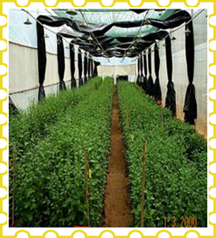
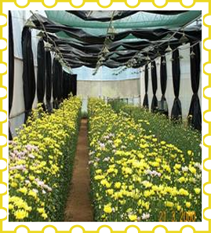

CUT CHRYSANTHEMUM (Dendranthema grandiflora Tzeuleu)
Asteraceae
Varieties
Standard types: Bonfire Orange, Bonfire Yellow.
Spray types: Reagan Yellow, Reagan White, Nanako, etc.,
Climate: Cut chrysanthemums are grown under polyhouses with the following environmental conditions.
Temperature : 16 - 250C
Relative humidity : 70 - 85 %
CO2 : 600 - 900 ppm
Photoperiod : Long day conditions with 13 hours light & 11 hours darkness during vegetative stage (upto 4-5 weeks from planting) and short day conditions with 10 hours light & 14 hours darkness during flower bud initiation stage.
Soil: Well drained sandy loam soil with good texture and aeration or growing medium made of 1: 1: 2 of soil, compost and cocopeat with pH of 5.5 to 6.5.
Growing media
The growing media consists of soil, compost and coco peat in the ratio of 1:1:2. The beds are formed with 1 m width, 0.3m height and at convenient length. The soil pH must be 6.5 with 1 to 1.5 EC (Electrical Conductivity).
Propagation: Terminal cuttings and tissue culture plants are used. Terminal cuttings are widely used for commercial cultivation. Cuttings of 5-7 cm length are taken from healthy stock plants and are induced to root by treating with IBA (1000 ppm).
Planting:
Beds of 1m width, 0.3m height and convenient length are formed. Nets (with cell size depending on the spacing adopted) are placed on the beds and planting is done.
Spacing:
15x 15 cm (45 plants/m2) or 10 x 15 cm (67 plants/m2).
Irrigation
Drip irrigation with 8-9 litres of water/m2/day.
Nutrition:
Basal application of DAP - 50 g/m2
Weekly schedule - from 3rd week after planting
| Fertilizer |
Quantity (g/m2) |
| Monday |
Wednesday |
19-19-19 |
3.0 |
1.0 |
KNO3 |
3.0 |
1.0 |
CAN |
2.0 |
1.0 |
Ammonium nitrate |
2.0 |
1.0 |
MgSO4 |
2.0 |
1.0 |
Fertilizer management
NPK @ 20:20:10 g/m2 is applied through fertigation at weekly intervals
Growth regulators
Alar 50 – 150 gm/100 lit water and B 9 at 8 – 25 ml/lit of water is used twice at the growing stage.
Special practices
Pinching
First pinching - 3 weeks after planting; 2nd pinching - 5 weeks after planting.
Disbudding
In spray varieties, only the large apical bud is removed and the lateral buds are retained. In standard varieties, the lateral buds are removed and only apical buds are allowed to develop.
Blindness
It occurs when the night temperature is too low and the days are short at the time when flower buds are forming. A rosetted type of growth is indicative of this difficulty. Center petals that fail to develop can be due to excessive heat; or in dark weather some varieties apparently lack enough food to open the flower. Chlorosis, or yellowing of the upper foliage, is generally associated with over watering, excessive fertilizer in the soil, or insects or diseases attacking the root system. Continued growth of shoots and failure to form flower buds when short days are started the mean night temperature was too low. Sunscald is prevalent on standards in flower in very warm weather. The petals turn brown and dry up.
Light requirement
Chrysanthemum is very much influenced by light and hence photoperiod should be regulated. (Photoperiod should be regulated as detailed under ‘climate’
| Growth phase |
Weeks from planting |
Photoperiod |
| Vegetative phase |
Up to 4-5 weeks from planting till the plant attains 50 to 60 cm height |
Long day : 13 hrs light and 11 hrs dark |
| Flowering |
5 -6 weeks after planting till harvest |
Short day : 10 hrs light and 14 hrs dark |
|  |
 |
| Lighting for chrysanthemum |
Growth regulators:
Spray GA3 (50 ppm) at 30, 45 and 60 days after planting to increase flower stem length.
Weed management:
Weeding and hoeing are done manually as and when required.
Plant protection
Pests
Leaf miner:
Spray Imidacloprid @ 0.5 ml/l or Acetamiprid @ 0.3 g/l.
Thrips:
Spray Fipronil @ 1.0 ml/l. Keep Yellow Sticky Trap 10 nos. for 100 sq.m area.
Aphids:
Spray Methyl demeton @ 2 ml/l or Monocrotophos @ 1 ml/l.
Red spider mite:
Spray Abamectin 1.9 EC @ 0.5 ml/l or Propargite @ 2 ml/l.
Diseases
White Rust:
Spray Azoxystrobin @ 1ml/l or Triflooxystrobin + Tebuconazole @ 0.75 g/l.
Leaf spot:
Spray Macozeb @ 2g/l or Azoxystrobin @ 2 ml/l or Difenoconazole @ 0.5ml/l.
Wilt:
Soil drenching with Carbendazim @ 1 g/l or Triflooxystrobin + Tebuconazole @ 0.75 g/l.
Powdery mildew: Spray Wettable Sulphur @ 2g/l or Azoxystrobin @ 1ml/l.
Harvest
Harvest index
Standard types - Flowers are harvested when 2 - 3 rows of rays florets are perpendicular to the flower stalk.
Spray types - When 50% flowers have shown colour for distant markets; when two flowers have opened and others have shown colour for local markets.
Chrysanthemum ready to harvest
Yield
Standard types:67 flower stems/m2
Spray types: 260 flower stems/m2
Post harvest technology
| Pulsing |
: |
Sucrose 4 % for 24 hrs
(Vase life : 18 days; Control : 8.5 days) |
Holding solution |
: |
BA 10 ppm + Bavistin 0.1 % + Sucrose 2 %
(Vase life : 17 days; Control : 8.5 days) |
Wrapping material |
: |
Polysleeves with holes (50 gauge thickness)
(Shelf life: 9.25 days; Control : 6.5 days) |
After harvest, the stem have to be cut at equal length (90 cm is the standard), bunched in five, putting a rubber band at the base and sliding them into a plastic sleeve and putting the bunches in plastic buckets filled with water. Early morning on the day of shipment (or night before), the bunches can be packed in boxes.
|